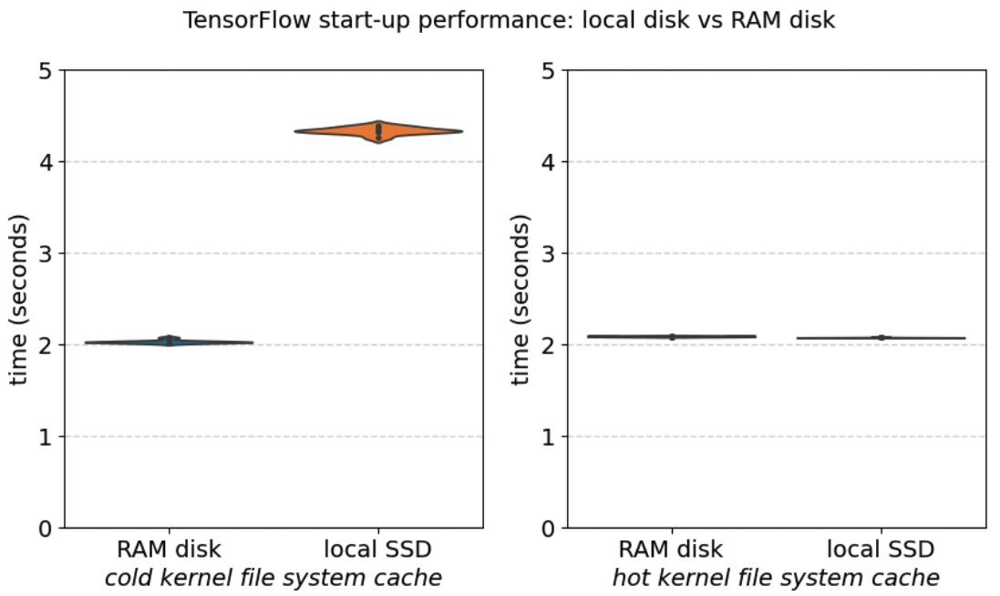
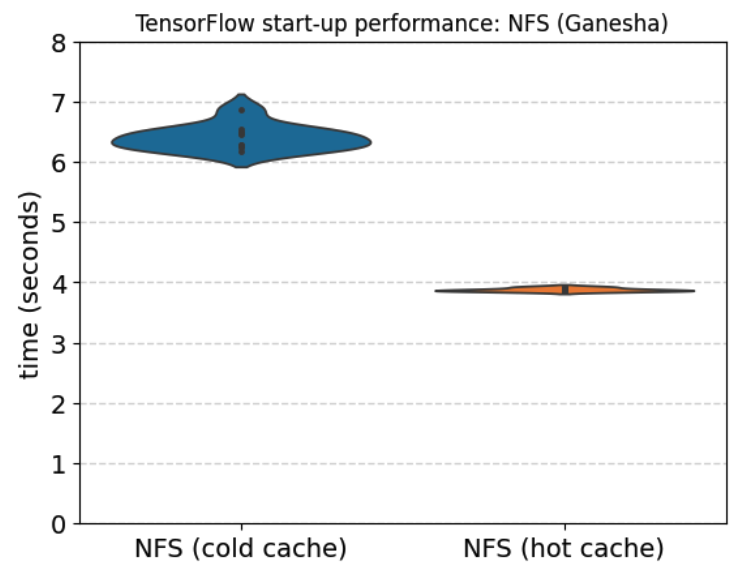
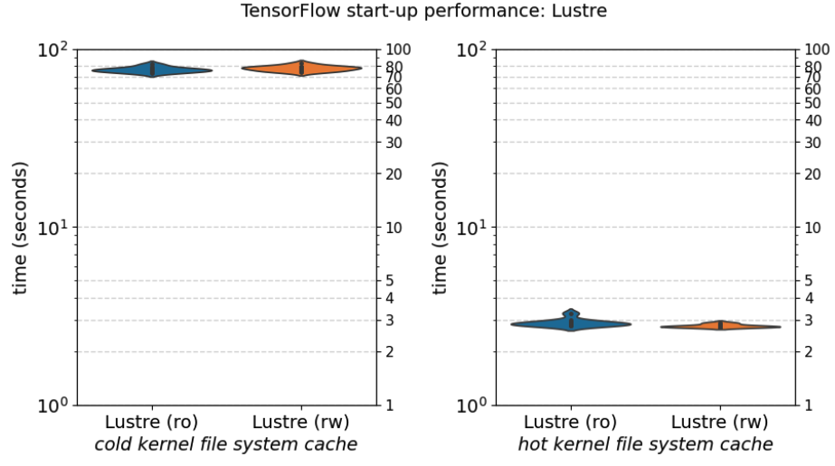
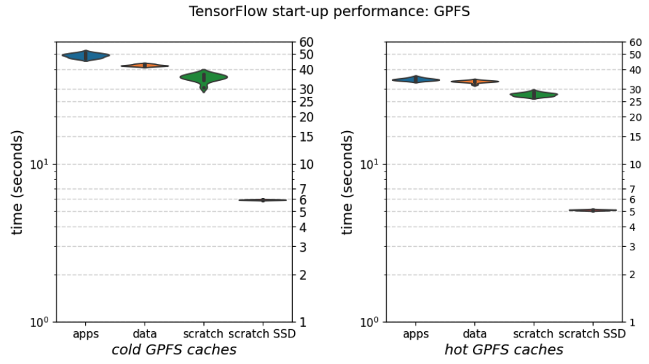
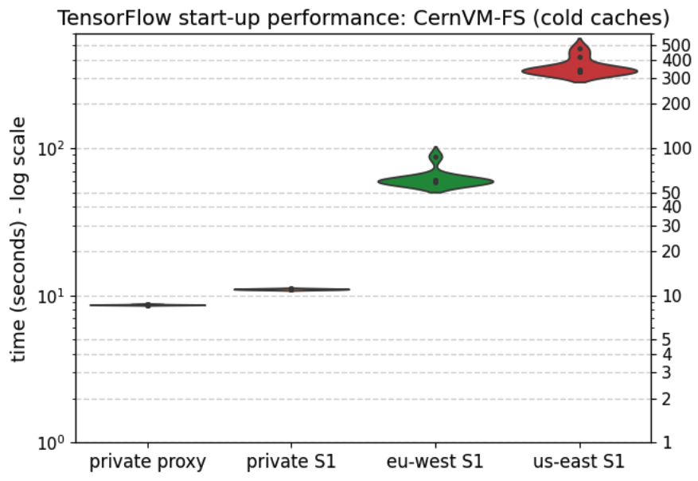
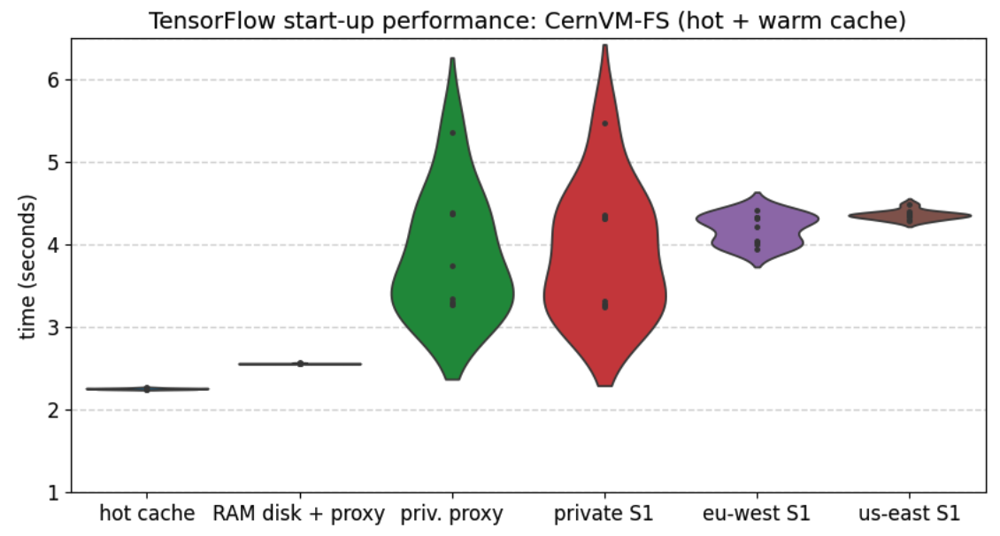

Work in progress
(30 April 2025)
The contents of this tutorial are currently being reworked to be up-to-date with recent developments in CernVM-FS, and to be well integrated in the EESSI documentation.
It is based on the "Best Practices for CernVM-FS in HPC" tutorial that was held on 4 Dec 2023, see also https://multixscale.github.io/cvmfs-tutorial-hpc-best-practices.
Performance aspects of CernVM-FS¶
One aspect we can not ignore in the context of software on HPC infrastructure is performance (the P in HPC).
Start-up performance¶
When installations of scientific software applications are provided via a CernVM-FS repository, the main performance metric to worry about is start-up time: the amount of time it takes until an application can start running. This requires that not only the binary program that is being launched itself is somehow available on the system (on disk, in memory, etc.), but also that all files required by it (libraries, dependencies) are available, including the ones they require in turn, etc.
Parallel filesystems like GPFS (now IBM Storage Scale) and Lustre, which are ubiquitous on HPC systems, are notorious for not performing well in this respect, which is not surprising since they mainly target a very different use case: large-scale high-performance I/O on large datasets.
This has led to all sorts of creative workarounds for "the startup problem", including for example tools like Spindle, and recommendations to not install (in particular Python) software directly on the parallel filesystem but to use a container image instead (see the documentation of the current flagship EuroHPC system LUMI).
A note on the presented performance results
The start-up timing results shown in this section are by no means meant to be a statistically rigorous study of software start-up time.
That said, these results should be indicative of what you may see on production HPC systems, and give a good view on the start-up times that you will observe for software provided via CernVM-FS, relative to alternatives like GPFS, Lustre, NFS, local disk, etc.
More details on the experimental setup are available at the end of this section.
Status of relevant caches¶
The status of the Linux kernel file system cache, the GPFS caching mechanisms (page pool, stat cache, etc.), and the CernVM-FS client cache are key factors in start-up performance (when they are relevant to the file system being accessed).
We discriminate between 3 scenarios: cold cache, hot cache, and warm cache.
Cold cache¶
We use the term "cold cache" when none of files required for starting a particular software application are available in any of the relevant client-side caches.
This is the worst-case scenario, since the necessary files have to be obtained elsewhere first, which could be from local disk, or from a remote server (either in the local network, or remotely), which may heavily impact start-up time.
To ensure that the caches on the client system are cold, we actively clear all caches each time before we evaluate each start-up performance.
Hot cache¶
When all files required for running a particular software application are already cached in memory on the client system (in the kernel file system cache, or in the GPFS caches), we have a "hot cache" situation.
This is the best possible scenario, which is typically the case when the software application has been used recently on that client system.
To ensure that the caches on the client system are hot, we first do a couple of warmup runs before we start evaluating start-up performance.
Warm cache¶
Finally, we also consider a "warm cache" situation, in particular when evaluating start-up time for software provided via CernVM-FS. In this situation, all necessary files are available in the CernVM-FS client cache (which is typically on the local disk of the client), but not yet in the in-memory kernel file system cache. As a result, there will be an impact on start-up performance, since the files have to be loaded from (local) disk first.
This is a fairly likely scenario, especially if the CernVM-FS client cache is sufficiently large to cover typical workloads being run – whether that's feasible or not depends a lot on the workload mix.
To evaluate start-up performance in this scenario, we:
- First do a couple of warmup runs to populate the CernVM-FS client cache;
- Clear the kernel file system cache;
- Evaluate the start-up performance once;
Steps 2 and 3 are then repeated to get multiple performance results in the same scenario.
Real-world scenario¶
In a production setup of an HPC cluster, where typically multiple thousands of jobs are being run every day, the actual situation will usually be a mix of these 3 idealistic scenarios, since some files may have been accessed very recently (for example common libraries from the EESSI compatibility layer, or common dependencies from the EESSI software layer), while others may only be in the CernVM-FS client cache, or not cached yet at all (or may have been evicted from the cache due to space constraints).
TensorFlow start-up performance¶
We have evaluated the start-up performance of TensorFlow across a wide range of system configurations, by timing how long it takes to run the following command:
Although this is a trivial single-core workload, it yields some interesting insights into start-up performance for software provided via CernVM-FS and alternatives.
More details on this workload, in particular an overview of how many files are required to run it, are available in the Test workload details section.
Local filesystems¶
To set the stage, we first evaluate start-up performance using only local filesystems on the client:
local disk (SSD, ext4, /tmp) and RAM disk (DDR4 RAM memory, /dev/shm).
Using RAM disk for all software installations is not exactly a realistic scenario on an HPC cluster, because of the wide variety of software applications and libraries that are typically employed, and the total amount of storage space that is required to host the necessary software installations. Nevertheless, it is worth evaluating start-up performance with a setup like this, if only to have a clear view on what the best possible start-up time is that we can achieve.
Using local disk to provide a large central software stack that caters to the needs of the diverse set of end users is unlikely to be feasible either. In addition, this approach implies a significant maintenance burden since the provided software installations must be identical across all client systems at all times, and typically requires limiting both what is centrally provided and how long software versions remain available. There are HPC sites that do take this approach however, one notable example being TACC, who provide an overview of their central software stack here.

These first results show that starting TensorFlow takes ~2.0 seconds when the necessary files can be served directly from RAM disk, and ~2.1 seconds from the kernel file system cache (hot cache).
With a cold cache and using software installations located on a local SSD disk, the start-up time of TensorFlow roughly doubles to ~4.3 seconds.
These times will be our reference points going forward.
Parallel file systems¶
Central software stacks on HPC systems are typically provided via some kind of distributed parallel file system, since that significantly reduces the maintenance burden (automatic synchronisation across client systems), and effectively removes the size limitation aspect since these parallel file systems typically have tens to thousands (or more) of TBs of available disk space.
NFS¶
Let's start with a traditional and fairly standard approach, which is to make a central software stack available via an export of a centrally managed shared file system using NFS. In this particular case we evaluated TensorFlow start-up time on a worker node of the HPC-UGent Tier-2 cluster victini, which uses NFS-Ganesha.

Here we already observe a significant, yet still somewhat limited, increase in start-up time.
With a cold cache, ~6.4 seconds are required to start TensorFlow, and there is notably larger variation in the start-up times; neither of these observations is a surprise with NFS.
The start-up time with a hot cache is also significantly higher compared to using local filesystems at ~3.8 seconds, but since this is an older generation system we can not directly compare these times to the ones observed for local disk and RAM disk earlier. There is a significant penalty involved though when using NFS, since on the same system we observed start-up times of ~2.5 seconds when using RAM disk, as well as with a hot kernel file system cache.
While these start-up times are still quite OK, it is worth noting that NFS is notorious for not scaling well when it needs to serve many different client systems, which is not apparent in these results since only a single client system was used.
Lustre¶
Lustre is a popular open-source distributed parallel file system that is used on many large-scale HPC clusters, including VSC Tier-1 Hortense and flagship EuroHPC pre-exascale system LUMI.
It is often also the only shared file system that is available on these systems, and hence is the most obvious choice to make software installations available to the cluster worker nodes.

We considered two different ways of accessing the Lustre file system of VSC Tier-1 Hortense (see below for more details) on which TensorFlow was installed:
- directly, via a read-write mount point;
- indirectly, via a read-only mount point (which is recommended on Hortense);
In both cases, the start-up times were quite similar, with a dramatic increase to ~75 seconds in the cold cache situation, and a very reasonable ~2.8-2.9 seconds with a hot cache.
The start-up time of well over 1 minute for TensorFlow with a cold cache is a clear sign that (this particular version and configuration of) Lustre is not well suited for serving software installations. This is a well-known problem, see for example the "Avoid Accessing Executables on Lustre Filesystems" recommendation that is included in the Lustre Best Practices documentation published by the HECC group at NASA for their Pleiades system, and the recommendation for LUMI to not install Python software directly on the Lustre file system.
GPFS¶
Another very popular (commercial) distributed parallel file system is IBM Storage Scale, formerly known as IBM Spectrum Scale, and commonly referred to by its original name GPFS.
We evaluated the start-up performance of TensorFlow on the 4 different GPFS file systems that are available in the HPC-UGent Tier-2 infrastructure (see here for more information):
apps, which provides the central software stack (along with home directories);data, which is intended for long-term storage of large volumes of data;scratch, which is recommended for live input/output of jobs;scratch (SSD), an additional smaller scratch file system backed by SSDs, which is recommended for I/O-intensive workloads;

Cold cache start-up times for TensorFlow ranging from ~35 to ~48 seconds are observed for the apps, data, and scratch
file systems, with only the scratch (SSD) file system exhibiting somewhat reasonable cold start-up times of ~5.9 seconds.
While there is a clear decrease in start-up times when the various GPFS caching mechanisms (page pool, stat cache, file
cache) are hot,
the situation is still quite dramatic with ~27 to ~33 seconds being needed to start TensorFlow,
except for scratch (SSD) where it takes ~5.1 seconds. This implies that the GPFS caching mechanism
is not that effective, and that we are still being exposed a lot to the file system latency.
The main reason for this is that the GPFS "stat cache", which is a client-side caching mechanism for stat system calls
that is common across all GPFS files systems available on that client, is set to only have 1,000 entries
in the HPC-UGent Tier-2 setup (which is the default for the maxStatCache configuration setting in GPFS). While this could obviously be
tuned to improve start-up performance of software, this should not be done on a hunch since it may adversely
affect the overall stability of the GPFS storage servers.
CernVM-FS¶
Now that we have an extensive set of reference start-up times, we can evaluate the start-up performance when using a TensorFlow installation that is provided via CernVM-FS.
Along with a worker node in the HPC-UGent Tier-2 cluster doduo (located in Ghent, Belgium) as client system, we consider the following configurations:
- a private proxy server that is accessible from the client system via a high-speed network;
- a private Stratum 1 server that is available in the local network via Gbit Ethernet;
- the public Stratum 1 server for EESSI in AWS availability zone
eu-central-1a; - the public Stratum 1 server for EESSI in Azure location
East US (Zone 1);
More technical details on network connectivity to these servers are available below.
CernVM-FS was explicitly configured to only use one of these servers, via the CVMFS_SERVER_URL and/or
CVMFS_HTTP_PROXY client configuration
settings.
Cold cache¶
Let's start with the worst-case cold cache scenario, in which CernVM-FS needs to download all necessary files to the client system from a (local or remote) server before TensorFlow can be started.

We observe very reasonable cold start-up times when using an in-network private proxy server (~8.6 seconds) or private Stratum 1 replica server (~11.0 seconds), significantly better than what we observed for GPFS and Lustre (both of which are accessible from cluster worker nodes via a dedicated high-speed network).
When CernVM-FS needs to download the necessary files from a remote public Stratum 1 server we of course observe dramatically longer start-up times, from ~62 seconds when using the relatively close one (within Europe), to about 6 minutes when having to go across the Atlantic.
This highlights the need for a private proxy or Stratum 1 replica server for a production-quality CernVM-FS setup.
Hot + warm cache¶
In the hot cache and warm cache scenarios, in which all necessary files are already available locally on the client system either in-memory or on the local disk, we observe much better start-up times, as expected:

With a hot kernel file system cache, we see an average start-up time for TensorFlow of ~2.25 seconds, which suggests there is a ~7% overhead introduced by CernVM-FS. Note that this is still significantly better than what we observed for NFS, Lustre, and GPFS.
In the warm cache scenarios where CernVM-FS serves all required files from its client cache on a local SSD disk we see start-up times that are on average ~3.9-4.3 seconds, depending on the network latency to the remote server used in the CernVM-FS client configuration (and interestingly, with a larger variance when using a local proxy or Stratum 1, which may be because of other activity on the local cluster network). We did not try to optimize these warm start-up times by changing the CernVM-FS configuration settings, but some options are already supported by CernVM-FS that could reduce the impact of network latency considerably.
When using a RAM disk as location for the CernVM-FS client cache in combination with a private proxy server, the start-up time in the warm cache scenario was reduced to ~2.56 seconds, and a lot less variation was observed (although that could be coincidental).
Additional performance metrics¶
Next to software start-up time on a single client system, additional performance metrics should be evaluated as well, including:
- The scalability of a CernVM-FS setup when lots of worker nodes of an HPC cluster use software provided via CernVM-FS, in particular when running (large-scale) MPI applications;
- The impact of having the CernVM-FS "service" running on the client systems, in particular to what extent it increases OS jitter which can impact performance of workloads;
A more extensive performance study that covers these aspects as well is out of scope for this tutorial.
Test configuration details¶
A multitude of different system configurations is considered to evaluate start-up performance of the test workloads.
Client system¶
The client system used in the tests is a worker node of the HPC-UGent Tier-2 cluster "doduo", with two exceptions:
- When testing NFS, the HPC-UGent Tier-2 cluster "victini" was used instead;
- When testing Lustre, the VSC Tier-1 cluster "Hortense" was used instead;
(see System configurations below for more technical details)
Software stack¶
Software installations being used are available via either:
- a GPFS filesystem, directly attached to the cluster via a high-speed network;
- a Lustre filesystem, directly attached to the cluster via a high-speed network;
- an NFS mount of a GPFS filesystem, via a 10Gbit Ethernet connection;
- individual CernVM-FS setups:
- with a client cache on local disk (SSD,
ext4), or in RAM disk (/dev/shm); - without and with (only) a (private) proxy server in the local network;
- without and with (only) a private Stratum 1 replica server in the network;
- with (only) a specific public Stratum 1 replica server: one in AWS
eu-westregion, another in Azureus-eastregion;
- with a client cache on local disk (SSD,
(see System configurations below for more technical details)
Test workload details¶
TensorFlow¶
We evaluate the start-up performance of TensorFlow, which is considered to be a representative example of a scientific workload implemented in Python, which is a tremendously popular programming language in scientific research. We used TensorFlow version 2.13.0, installed with EasyBuild v4.8.2, on top of Python version 3.11.3, which is available in EESSI.
Before starting TensorFlow we first load the module to update the environment such that TensorFlow is available:
To evaluate the start-up performance of TensorFlow, we simply run:
Timing information is collected using the GNU time command, as follows:
Required files¶
Based on the statistics for and the contents of the CernVM-FS client cache after running the specified command
on an x86_64 client system (see the details on the HPC-UGent Tier-2 cluster doduo below),
starting from a cold CernVM-FS client cache, we know that importing the tensorflow Python package:
- triggers ~3,680
open()calls + ~510opendircalls (which includes non-existing paths); - requires ~3,470 files, including:
- ~2,200 files from the TensorFlow installation itself (~94%
*.pycfiles); - ~950 files from Python packages outside of the TensorFlow installation directory,
of which are ~82%
*.pycfiles and ~12% shared libraries (.so); - 17 files from the EESSI compatibility layer;
- ~2,200 files from the TensorFlow installation itself (~94%
- pulls in about ~1.1GB of data in total;
As such, this is a challenge for parallel filesystems like GPFS and Lustre, as the performance results clearly show.
Experimental setup¶
System configurations¶
HPC-UGent Tier-2 cluster 'doduo'
Hardware:
- Dual-socket AMD EPYC 7552 CPU (AMD Rome, 96 cores in total)
- 256GB of DDR4 RAM memory
- 240GB SSD local disk (
ext4) - HDR-100 InfiniBand interconnect
Operating system:
- Red Hat Enterprise Linux 8.8
- Linux kernel
4.18.0-477.27.1.el8_8.x86_64 - GPFS (now IBM Storage Scale) version 5.1.8-2 (
pagepool=4G,maxStatCache=1000,maxFilesToCache=4000) - CermVM-FS 2.11.2
(see also HPC-UGent Tier-2 infrastructure overview)
HPC-UGent Tier-2 cluster 'victini'
Hardware:
- Dual-socket AMD EPYC 7552 CPU (AMD Rome, 96 cores in total)
- 256GB of DDR4 RAM memory
- 240GB SSD local disk (
ext4) - 10Gbit Ethernet interconnect
Operating system:
- Red Hat Enterprise Linux 8.8
- Linux kernel
4.18.0-477.27.1.el8_8.x86_64 - NFS-Ganesha 3.5
- CermVM-FS 2.11.2
(see also HPC-UGent Tier-2 infrastructure overview)
VSC Tier-1 cluster 'Hortense'
Hardware:
- Dual-socket Intel Xeon Gold 6140 (CPU Skylake, 36 cores in total)
- 96GB of DDR4 RAM memory
- 900GB SAS HDD local disk (
ext4) - HDR-100 InfiniBand interconnect
Operating system:
- Red Hat Enterprise Linux 8.8
- Linux kernel
4.18.0-477.27.1.el8_8.x86_64 - Lustre 2.12.9
- CermVM-FS 2.11.2 (with client cache of 4GB on SSD local disk)
(see also VSC documentation page on Hortense)
Network details
Bandwidth
Network bandwidth to HPC-UGent Tier-2 doduo cluster worker node from relevant servers,
as measured with iperf3 v3.15:
- private Squid proxy server in HPC-UGent network: ~22,500 Mbits/sec
- private Stratum 1 replica server in HPC-UGent network: ~940 Mbits/sec
- EESSI Stratum 1 replica server in AWS
eu-westregion: ~930 Mbits/sec - EESSI Stratum 1 replica server in Azure
us-eastregion: ~280 Mbits/sec
Server-side iperf3 command: iperf3 -V -s -p 80
Client-side iperf3 command: iperf3 -V -c SERVER_HOSTNAME_OR_IP -p 80 -f m
Latency
Network latency between HPC-UGent Tier-2 doduo cluster worker node and relevant servers,
as measured with tcptraceroute v2.1.0-6:
- private Squid proxy server in HPC-UGent network: ~0.2 ms
- private Stratum 1 replica server in HPC-UGent network: ~0.7 ms
- EESSI Stratum 1 replica server in AWS
eu-westregion: ~14 ms - EESSI Stratum 1 replica server in Azure
us-eastregion: ~84 ms
Relevant commands¶
Kernel file system cache
To clear kernel file system cache:
To check file system cache usage:
CernVM-FS client cache
To clear the CernVM-FS client cache:
To check size of CernVM-FS client cache on disk (path determined by CVMFS_CACHE_BASE configuration setting):
To check CernVM-FS client cache usage:
To check CernVM-FS client cache usage for a particular repository:
To check which files are included in the CernVM-FS client cache, use:
GPFS caching mechanisms
To clear all caches used by GPFS (page pool, stat cache, files cache, etc.), we simply shut down GPFS on the client system, and restart it:
This should only be done on an idle system, since this will trigger an unmount of all GPFS file systems on that client.
(next: Containers and CernVM-FS)